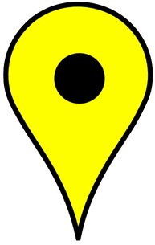
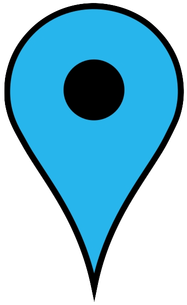

| Icon | Name | Description |
|---|---|---|
|  | Yellow Marker | Control Hub Node |
|  | Blue Marker | Gateway Node |
| Red Link | Active Control Hub to Gateway comm | |
| Blue Link | Active Gateway to Gateway comm | |
| Black Link | Inactive Gateway to Gateway comm with key exchange | |
 |
Grey Link | Inactive Gateway to Gateway comm without key exchange |
| Green Arrow Pointer | Animated symbol for Gateway to Control Hub comm | |
| Dark Blue Circle | Animated symbol for Gateway to Gateway comm |